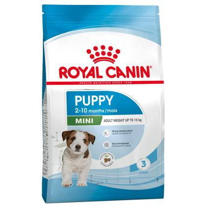
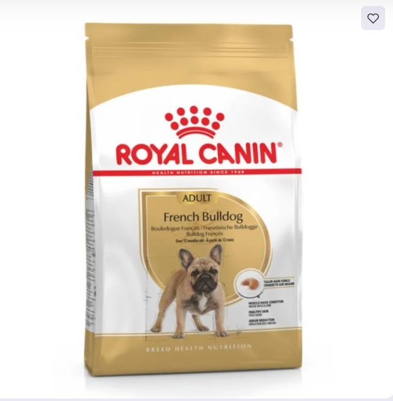
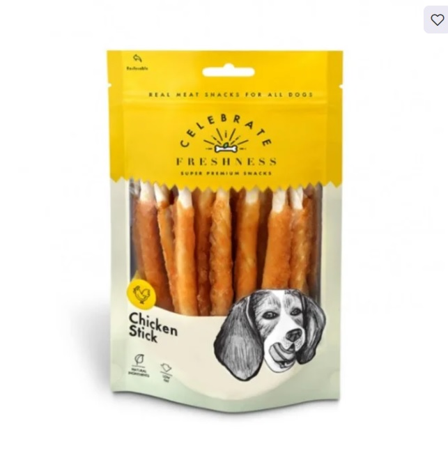
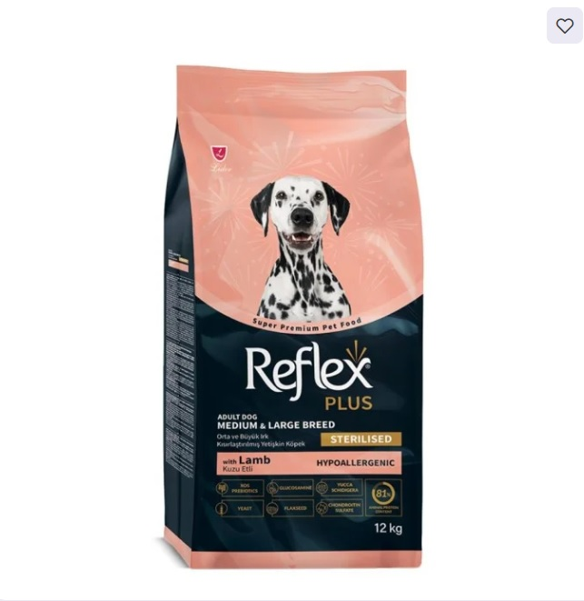
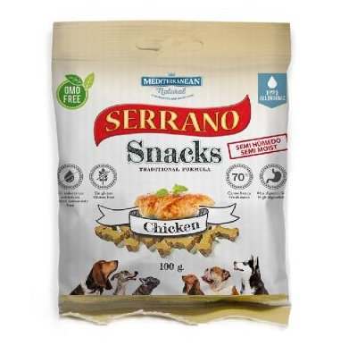
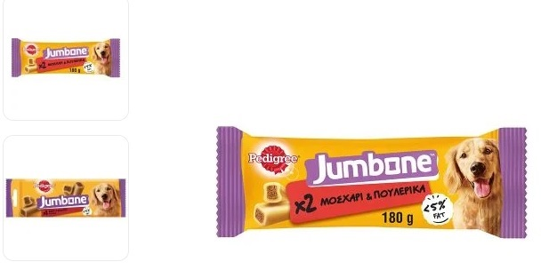

|

Η ROYAL CANIN® Mini Puppy είναι
ειδικά σχεδιασμένη
για να υποστηρίζει τις διατροφικές ανάγκες των κουταβιών
μικρόσωμης φυλής.
Αυτή η φόρμουλα είναι κατάλληλη για κουτάβια ηλικίας 2 έως 10 μηνών
που πρέπει να φτάσουν σε ενήλικο βάρος 4-10 κιλά.
ΙΣΧΥΡΟ ΑΝΟΣΟΠΟΙΗΤΙΚΟ: Υποστηρίζει την ανάπτυξη του
ανοσοποιητικού συστήματος
του κουταβιού, περιλαμβάνοντας ένα επιστημονικά αποδεδειγμένο
σύμπλεγμα που
περιέχει τις βιταμίνες Ε και C.
ΕΓΚΕΦΑΛΙΚΗ ΑΝΑΠΤΥΞΗ: Εμπλουτισμένο με ωμέγα-3 λιπαρά οξέα (DHA),
τα οποία είναι επιστημονικά αποδεδειγμένα ότι υποστηρίζουν την ανάπτυξη
του εγκεφάλου
του κουταβιού και ενισχύουν τη μάθηση κατά την πρώιμη εκπαίδευσή του.
ΥΠΟΣΤΗΡΙΞΗ ΤΟΥ ΜΙΚΡΟΒΙΩΜΑΤΟΣ: Συνδυασμός πρεβιοτικών (MOS) και πρωτεϊνών υψηλής πεπτικότητας
που βοηθούν στη διατήρηση μιας υγιούς ισορροπίας της εντερικής μικροχλωρίδας για
την καλή λειτουργία
του πεπτικού συστήματος.
ΒΕΛΤΙΣΤΟ ΕΝΕΡΓΕΙΑΚΟ ΠΕΡΙΕΧΟΜΕΝΟ:Ικανοποιεί τις υψηλές ενεργειακές ανάγκες
κουταβιών μικρόσωμων φυλών για μια σύντομη περίοδο ανάπτυξης,
έως 10 μηνών.
|

Η FRENCH BULLDOG ADULT συμβάλλει στη διατήρηση
της μυικής μάζας χάρη
σε ένα βέλτιστο περιεχόμενο σε πρωτεΐνη (26%). Περιέχει επίσης L-καρνιτίνη.
ΥΓΙΕΣ ΔΕΡΜΑ: Συμβάλλει στην ενίσχυση του ρόλου φραγμού
του δέρματος
και στη διατήρηση της υγείας του.
ΜΕΙΩΣΗ ΟΣΜΗΣ:Συμβάλλει στη μείωση των εντερικών ζυμώσεων
που μπορεί να προκαλέσουν
πεπτικές διαταραχές, μετεωρισμό και
άσχημη οσμή των κοπράνων.
Μια κροκέτα αποκλειστικά σχεδιασμένη
ώστε να διευκολύνει τη
σύλληψη της τροφής για το French Bulldog αλλά και να
ενθαρρύνει τη μάσηση.
|

Οι λιχουδιές Celebrate Freshness είναι low fat,
υποαλλεργικές και grain free.
Παρασκευάζονται με προσεγμένες πρώτες ύλες και πρώτο συστατικό το κρέας.
Τώρα με μεγάλη γκάμα γεύσεων και αρωμάτων για απαιτητικά κατοικίδια
που διαλέγουν
πάντα το καλύτερο!
|

Η Reflex Plus είναι μια πλήρης και ισορροπημένη
τροφή
εξαιρετικής ποιότητας για σκύλους.
Η σύνθεσή της βασίζεται στους ξυλο-ολιγοσακχαρίτες (XOS)
οι οποίοι ασκούν
πολύτιμη προβιοτική δράση με σχεδόν μηδενική θερμιδική αξία.
Βελτιώνει συνολικά την υγεία του αγαπημένου σας κατοικίδιου καθώς:
Ενισχύει το ανοσοποιητικό σύστημα, αυξάνει την πεπτικότητα
και αποτελεί φυσικό αντιοξειδωτικό.
|

Λιχουδιές με κοτόπουλο, για ενήλικους σκύλους.
Μαγειρεύονται σε πολύ χαμηλή θερμοκρασία προκειμένου να
διατηρήσουν όλα τα
θρεπτικά συστατικά τους. Δεν περιέχουν γλουτένη, τεχνικά χρώματα, ΓΤΟ
και τρανς λιπαρά οξέα. Η μικρή τους συσκευασία σάς βοηθά
να τα έχετε παντού
μαζί σας, σε βόλτες ή εκδρομές.
|

Λιχουδιές με τραγανό περίβλημα και μαλακό πυρήνα,
με γεύση μοσχάρι, για ενήλικους σκύλους
από 10kg και άνω. Είναι πλούσιες σε βιταμίνες,
μεταλλικά άλατα και Ωμέγα-3 λιπαρά οξέα,
ενώ δεν περιέχουν τεχνητά χρώματα και αρώματα.
Συνδυάζουν τη θρεπτική αξία και τη γευστική απόλαυση
και θα ικανοποιήσουν απόλυτα το σκύλο σας.
|